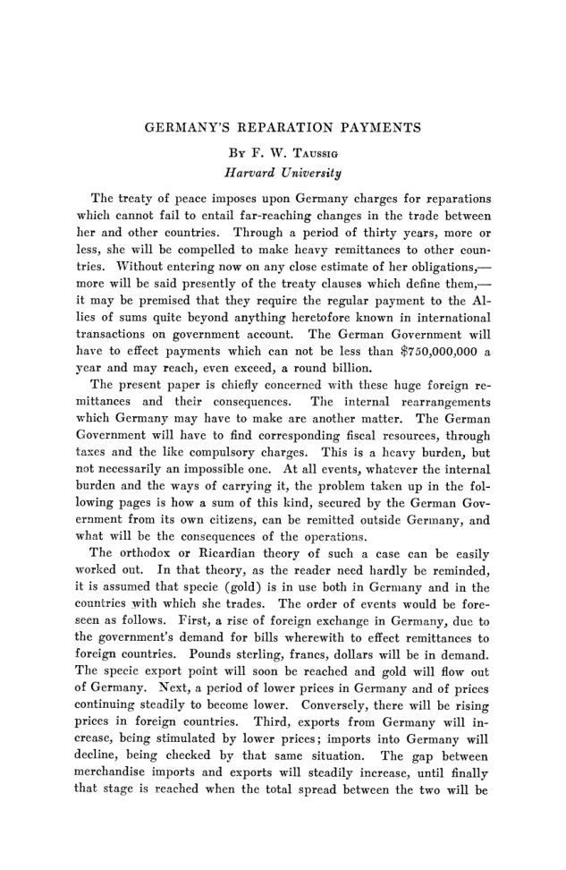

Taussig e a reparação que só podia ser paga em mercadorias
Leitura: 8 min
Em dezembro de 1919, F. W. Taussig calcula as remessas exigidas da Alemanha pelo tratado de paz e mostra por que elas só poderiam ser pagas com um grande excedente de exportações.


Taussig começa por uma ordem de grandeza. O tratado de paz impunha à Alemanha encargos de reparação que exigiriam remessas regulares aos aliados, por cerca de trinta anos, muito acima de qualquer transação internacional por conta de governos já conhecida: não menos de US$ 750 milhões por ano, talvez um bilhão ou mais.
O texto foi lido na tarde de 29 de dezembro de 1919, no salão de baile do Hotel La Salle, em Chicago. Taussig deixa de lado o problema interno, de como o governo alemão arrecadaria a soma, que considera pesado, mas não necessariamente impossível, e se concentra em outra pergunta: como uma soma dessas, obtida dos próprios cidadãos, pode ser remetida para fora do país, e com que consequências.
O que diz a teoria clássica?
Pela teoria ricardiana, supondo ouro em circulação dos dois lados, a sequência seria esta: a demanda do governo por divisas eleva o câmbio, o ouro sai da Alemanha, os preços caem lá e sobem no exterior, as exportações alemãs crescem e as importações diminuem, até que o excedente comercial se iguale à remessa anual. Aí o ouro para de fluir e as divisas ficam regularmente à disposição do governo. As mercadorias podem ir aos países credores diretamente ou por terceiros, como a América do Sul, o Oriente ou a Rússia.
Taussig destaca uma perda menos visível. Durante todo o período, as rendas monetárias alemãs seriam mais baixas e as dos países credores mais altas; a Alemanha entregaria uma quantidade física de mercadorias maior do que a necessária, aos preços anteriores, para somar um bilhão, e compraria menos importações em quantidade física. É uma perda menos sentida que a remessa, mas real.
Quando os pagamentos terminassem, haveria reversão: o ouro voltaria, os preços alemães subiriam e o comércio retornaria ao ponto de partida. Taussig aproveita para corrigir um erro comum. Enquanto uma remessa continua, o fluxo de ouro não se reverte sozinho; um tributo perpétuo deixaria preços permanentemente mais altos no país que recebe e mais baixos no que paga. A reparação só gera refluxo porque tem data para acabar.
A história ajuda?
Pouco. As indenizações cobradas de países como a Turquia e a China ocorreram em condições muito particulares. A única grande operação entre países desenvolvidos, a indenização franco-alemã de 1871, foi uma soma única, os cinco bilhões de francos, paga em pouco tempo e sobretudo com títulos estrangeiros em poder dos franceses. Algo semelhante, diz, ocorreu quando Inglaterra e França pagaram as exportações americanas de 1916 e 1917. Nenhum desses expedientes serviria para remessas pesadas e regulares por décadas.
Além disso, a escala obriga a revisar a teoria. Se o governo alemão comprasse divisas e deixasse o ouro sair, o meio circulante se esgotaria em poucos meses, no máximo em um ano, muito antes de exportações e importações se ajustarem. O resultado seria uma revolução monetária e um colapso de crédito com efeitos sobre o mundo inteiro.
Quanto o tratado cobrava?
Taussig divide as cláusulas em três partes, convertendo o marco-ouro a um quarto de dólar. A primeira previa US$ 5 bilhões até 1º de maio de 1921, a serem cobertos em grande parte por navios, títulos, carvão, máquinas e gado entregues até lá; ele supõe, com generosidade, que metade seria coberta assim e a outra metade convertida em títulos. A segunda, uma emissão de US$ 10 bilhões em títulos, com juros de 2,5% entre 1921 e 1926 e, depois, 5% mais 1% de amortização. A terceira, até mais US$ 10 bilhões, emitidos só quando a Comissão de Reparações julgasse que a Alemanha podia pagar.
O que muda com o papel-moeda?
A Alemanha estava sob regime de papel-moeda, sem pontos de ouro e com câmbio cotado em papel depreciado, e dificilmente sairia dele cedo. Ricardo e seus seguidores supunham que câmbio, ágio do ouro e nível de preços andassem juntos. A experiência, diz Taussig, mostra que os dois primeiros andam juntos, mas os preços podem se afastar deles por muito tempo, sobretudo os dos bens só vendidos no mercado interno.
A demanda constante do governo por letras sobre Londres, Paris ou Nova York manteria o câmbio acima do que justificariam os preços internos. Os exportadores comprariam barato na Alemanha e venderiam as divisas com vantagem; os importadores teriam o oposto. Trabalho e capital migrariam para as indústrias de exportação, o que equivale, por outro mecanismo, às entregas de carvão e gado previstas no tratado. Por isso, conclui, o papel-moeda, que costuma perturbar o comércio, poderia acelerar o ajuste e jogar a favor da Alemanha. Com o tempo, câmbio e preços voltariam a convergir.
Por que só as mercadorias contam?
Este é o centro do texto. A reparação só pode ser paga em bens, e o limite é o excedente possível de exportações sobre importações. As estimativas baseadas na riqueza total da Alemanha não vêm ao caso: terras, casas, ferrovias e fábricas não podem ser levadas, e ouro e títulos já teriam sido esgotados antes de começar o fluxo regular. Qualquer valor de capital fixado para a dívida seria apenas o valor presente do excedente máximo de exportações.
“De algum modo, uma enorme balança comercial favorável (nunca a expressão teve maior ironia) precisa ser criada depressa.” (“Somehow a huge favorable balance of trade (never has the phrase had greater irony) must be rapidly developed.”)
A venda de propriedades alemãs a investidores estrangeiros, a única ressalva, lhe parece desprezível, e criaria a necessidade de remeter lucros e juros, de novo em mercadorias. O governo alemão, portanto, teria de agir deliberadamente: restringir importações, de luxo e talvez com viés protecionista, e promover exportações por subsídios, fretes especiais, preços reduzidos e isenções. Práticas assim, em condições normais, prejudicam o próprio país que as adota, escreve Taussig; aqui, a perda é inevitável de qualquer modo, e os credores não teriam como objetar.
Onde estava a contradição?
Taussig prevê a reação dos protecionistas dos países aliados diante de uma Alemanha vencida que fecha seu mercado e força as vendas externas, e a satisfação dos protecionistas alemães com a conquista de mercados, embora essas exportações, sendo tributo, nada rendam ao país. Mais grave, os programas comerciais dos próprios aliados contradiziam a reparação: tentavam tomar da Alemanha todos os mercados, ela perdera colônias e navios, e o protecionismo se reforçava na França e na Itália. Para ele, ao sufocar as exportações alemãs, os aliados cortavam o próprio nariz.
O único grande destino possível seria a Europa Oriental, sobretudo a Rússia, que receberia manufaturas alemãs e pagaria com alimentos e matérias-primas. Essa expansão, diz, deveria ser bem-vinda, salvo por razões mercantilistas.
A França ganharia com a reparação?
Sim, responde Taussig, contra quem dizia que exações militares nunca beneficiam os vencedores; até a indenização de 1871 trouxera ganho material à Alemanha. Mas o ganho viria com ajustes. As mercadorias alemãs, gratuitas para o recebedor, deslocariam produção francesa, e a concorrência indireta, por meio da Rússia, afetaria as exportações francesas e britânicas. E haveria dois ajustes, na entrada e na saída, como no antigo debate alemão entre política agrária e política industrial. Ao fim, a Alemanha teria um mercado exportador estabelecido e estaria em melhor posição para mantê-lo.
Taussig termina com cautela: suas previsões são hipotéticas, o tratado ainda poderia mudar, e só em 1926 as cláusulas entrariam plenamente em vigor. Conta que um estadista francês lhe disse que, se a Alemanha só pudesse pagar competindo com a França, os aliados simplesmente cancelariam as reparações. A resposta de Taussig é que, depois de vendidos os títulos a investidores, o cancelamento deixaria de ser possível.
“Quem pode dizer em que tipo de mundo estaremos daqui a dez anos?” (“Who can say what sort of world we shall find ourselves in ten years hence?”)
Na minha leitura
Na minha leitura, o mérito do texto está em separar duas restrições que o debate público misturava: a fiscal, de arrecadar a soma dentro da Alemanha, e a de transferência, de convertê-la em divisas. Taussig mostra que a segunda depende do comportamento dos credores, porque só um excedente de exportações paga a dívida, e que nenhuma estatística de riqueza a resolve.
Também chama atenção a forma como ele trata a teoria. Taussig expõe o mecanismo ricardiano, admite que a escala e o papel-moeda o invalidam em parte e o reconstrói com a divergência entre câmbio e preços internos. Williams, na discussão, vai mais longe e duvida dos próprios estágios de equilíbrio. A divergência entre os dois é um bom exemplo de como o modelo serve de guia sem substituir o exame das instituições.
Glossário
- Reparações
- pagamentos impostos à Alemanha pelo tratado de paz para compensar danos de guerra aos aliados.
- Ponto de exportação do ouro
- cotação do câmbio a partir da qual compensa enviar ouro em vez de comprar divisas.
- Ágio do ouro
- prêmio do ouro sobre o papel-moeda inconversível, que acompanha a cotação do câmbio.
- Problema da transferência
- dificuldade de converter em divisas uma soma arrecadada internamente para pagamento ao exterior.
Fontes
- Germany's Reparation Payments — F. W. Taussig, Harvard University (pp. 33–49). JSTOR · Internet Archive (PDF)
- Edição completa, com os demais artigos: Nº 163 do Arquivo.
Documento em domínio público (EUA, publicado antes de 1931), via JSTOR Early Journal Content e Internet Archive. Resumo e comentário do autor deste site, sem afiliação com a American Economic Association. Encontrou um erro? Escreva: a correção é publicada no próprio texto, com data.
← Haig e o imposto que a Inglaterra não queria abolir ↑ Nº 163 · Chicago, 1919: impostos de guerra, reparações e preços da paz